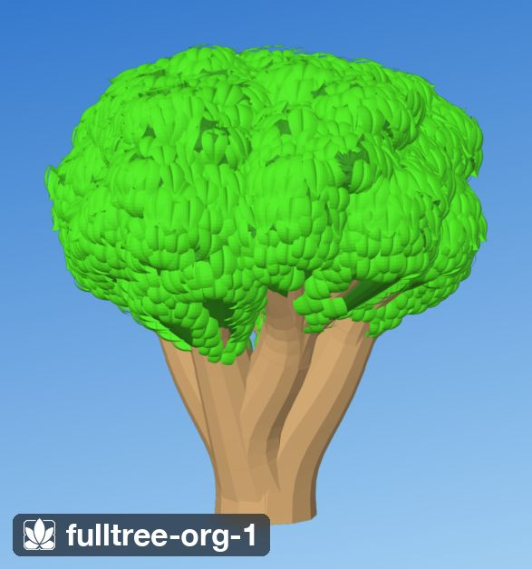
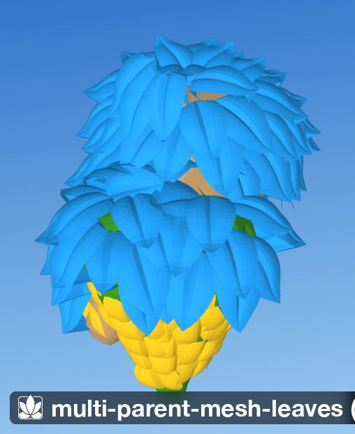
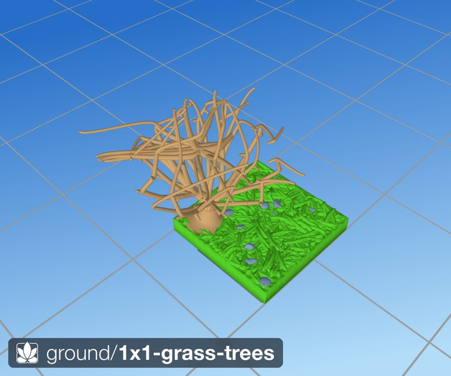
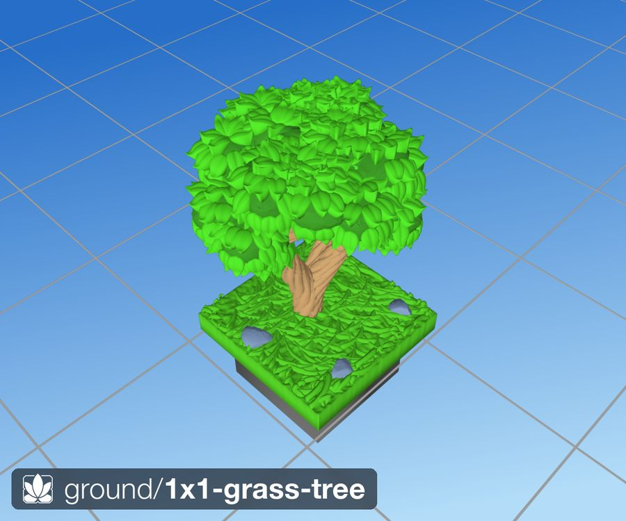
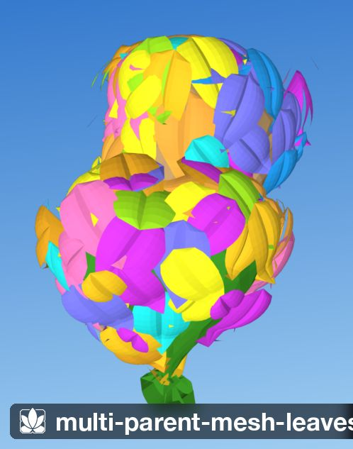

What it looks like
The trunk flares at the ground and carries bark grooves that wind up it and continue through every fork. Branches divide cleanly, like an architect's sketch of a tree, never tangling or doubling back. Each branch ends in a rounded clump of foliage, and the clumps merge into one lumpy crown.
The crown is covered completely in separate leaves: no bare patches, and no visible rows or rings. Leaves point down-slope with a gentle, coherent swirl, and overlap like shingles, each sitting a little higher than the leaf it covers, so every leaf reads on its own. On top of the crown the leaf tips curl up; underneath, where a hanging leaf could not print, leaves lie flat against the clump in a low arch.
No two seeds grow the same tree, but every tree has the same character.


Using it in a tile
Today, trees are built by the Python library. A tile spec lists a Tree layer in a region; put it before Grass so the grass grows round the trunk. From src/tiles/ground/2x2-grass-tree.tile.py:
Tree(
placement=Uniform(count_per_square=0.25), # one tree on a 2×2
n_attractors=32, # 32 foliage clumps
leaf_length_mm=4.5,
leaf_width_mm=3.0,
),Build it with dharmatiles-gen --tile "src/tiles/ground/2x2-grass-tree.tile.py". The STLs go to stl/db/ and stl/ol/.
In the Rust engine (from phase P5) the same tile is a short KDL document, library/tiles/ground/2x2-grass-tree.dtile (branch rust/p1):
use "parts/grass" long-grass
tile grass-tree size="2x2" seed=84 {
stack {
ground // flat, at the ground level (5 mm)
long-grass // grows round the trunk, wherever it is listed
tree height=40 { // anywhere on the tile; or at="1,1"
trunk height=30 // bare trunk below the crown
crown width=30 clumps=32 shape=round branching=normal
leaf length=4.5 width=3
}
}
}A ready-made preset: use "parts/trees" oak gives a 50 mm oak with a short trunk and a wide crown (library/parts/trees.dtile). The language as a whole is on the language page.
Reference
in= at=Controls
| Control | Takes | Default | What it does |
|---|---|---|---|
height | mm, 20–120 | 40 | ground to the top of the crown |
trunk | group | — | the bare trunk |
trunk height | mm | 30 | bare trunk below the crown |
trunk width | mm | — | trunk thickness at the ground |
crown | group | — | the crown |
crown width | mm | 30 | crown width |
crown shape | word | round | silhouette
|
crown clumps | count, 8–200 | 32 | clumps of foliage, one per branch end |
crown clump-size | mm | 5.5 | size of each clump |
crown branching | word | normal | few long limbs, or many forks; the only branching control in a tile
|
leaves | word | on | separate leaves, just clumps, or a winter tree
|
leaf | group | — | one leaf |
leaf length | mm | 4.5 | leaf length |
leaf width | mm | 3 | leaf width |
Expert controls (parts files only)
| Control | Takes | Default | What it does |
|---|---|---|---|
branch | group | — | the generator's six branching knobs (expert: parts files only) |
branch split | degrees | — | half-angle of the cone a branch keeps |
branch eagerness | number | — | 1 splits early, 0 only near the tips |
branch target | number | — | aim point in the attractor cloud, 0 low to 1 high |
branch balance | number | — | how evenly a fork shares its attractors, 0 to 1 |
branch exponent | number | — | pipe-model exponent |
branch min-radius | mm | — | branch radius at a tip |
In the library
1x1-grass-tree.dtilelib:tiles/ground/1x1-grass-tree.dtile2x2-grass-tree.dtilelib:tiles/ground/2x2-grass-tree.dtile1x1-water+grass-tree.dtilelib:tiles/water/1x1-water+grass-tree.dtile
Generated from dharmatiles looks tree by cargo xtask docs.
Sizes
- Tree. 40 mm tall by default; the 1×1 library tile uses 35 mm with a 24 mm crown, the 2×2 tile 40 mm with a 30 mm crown.
- Leaves. 4.5 mm long, 3 mm wide, 0.24 mm thick, rooted 0.75 mm into the clump. A full tree carries about 2,000–2,400 leaves.
- Trunk and branches. Branch tips are 1 mm in radius; the trunk is as thick as its branches need (a pipe model), so it is never set directly. Bark grooves are about 0.8 mm deep and 2.25 mm apart.
Edges and neighbours
- A trunk is kept at least one crown radius in from every tile edge (
src/dharmatiles/scatter/distribute.py:78), so the crown stays over its own tile. - Grass stays out of a circle round the trunk and grows taller close to it, so the tree sits in a small tuft (
src/dharmatiles/trees/layer.py:291). - The tree does not change the tile edge; the ground around it meets other tiles as described on the tile system page.
Printing and painting
- No supports. Print base down. Branches grow at least 26° above horizontal (the skeleton aims for 35°), which keeps them inside the 55°-from-vertical overhang limit: 35° above horizontal is the same line as 55° from vertical.
- Leaves print as small plates. On top of the crown each leaf is a tilted plate that bridges from its rooted base. Underneath, leaves lie flat on the clump in an arch and inherit its slope, so no leaf hangs in the air.
- Strong enough to handle. Each leaf is one watertight solid rooted into its clump, and the wood is one closed volume from root to clump.
- Painting. Prime, base-coat the wood brown and the crown green, then drybrush the crown lighter: the shingled leaf edges catch the brush and the gaps between leaves stay dark. The bark grooves take a wash.
- Checked on every build. Any branch below 26° raises a warning naming it.
How it is made
The generator is src/dharmatiles/trees/. Each tree is grown on its own, in four stages.
- Crown envelope. The crown is a rounded solid of revolution (
trees/envelope.py). About 200 target points, called attractors, are scattered over its side surface, weighted by area so the top is not crowded (_sample_canopy,trees/skeleton.py:687). Attractors are grouped into clusters about 20 mm across, and each cluster is pushed outward into a dome, so the crown reads as lobes. - Skeleton.
grow_skeleton(trees/skeleton.py:50) grows from the root. Each branch owns a set of attractors and steps 1 mm at a time toward them. Before each step it looks ahead: attractors that would fall outside a 30° cone, or that would need a branch flatter than 35°, split off into a new branch from the current point, at most three at a time (_branch_skeleton, line 178). When a branch owns one attractor it lands exactly on it (_grow_to_leaf, line 403). So every branch end is an attractor, and forks happen only between them. Branch thickness is worked out from the tips down (_compute_radii_bottom_up, line 529). - Wood and foliage.
build_branch_mesh(trees/mesh.py:54) turns each skeleton edge into a closed, tapered, curved tube with smooth joints at forks, unions them into one wood volume, and flares the root into the ground. Bark grooves start at the root, wave and twist up every branch, and stop short of the foliage (trees/bark.py). The last 10.5 mm of each branch end swells into a noised rounded clump (_build_foliage_cluster_mesh, line 713). - Leaves.
place_leaves_organic(trees/placement_organic.py:309) joins all clumps into one surface, then throws leaf roots onto it until no more fit (a maximal Poisson-disk sample), which guarantees there is no bare patch. Each leaf points down-slope, turned by up to 15° by a smooth field. Leaves are built from the bottom up, each standing off 0.3 mm above any lower leaf it overlaps. Each leaf is seated, built and sealed into a solid by the shared per-leaf pipeline (trees/placement_leaf.py,solidify_leafattrees/leaf.py:852). Leaves that would pierce a branch are dropped.
Finally the trunk footprint is stamped into the tile so grass steers round it. A tile with one tree builds in about 13 seconds.
Key constants
| Name | Where | Value | Meaning |
|---|---|---|---|
segment_length_mm | Tree | 1.0 | Skeleton step length. |
branch_split_angle_deg | Tree | 30° | Half-angle of the cone a branch keeps. |
target_fdm_angle_deg / strict_fdm_angle_deg | Tree | 35° / 26° | Branch elevation the skeleton aims for / the hard floor. |
branch_exponent | Tree | 3.0 | Pipe-model exponent: thicker trunk at higher values. |
foliage_cluster_length_mm | Tree | 10.5 | Length of branch end that swells into a clump. |
_ORGANIC_SPACING_FRAC | placement_organic.py:65 | 0.45 | Root spacing as a fraction of leaf width: the overlap knob. |
_ORGANIC_DIR_VAR_DEG | placement_organic.py | 15° | Peak turn away from down-slope. |
_ORGANIC_SHINGLE_STEP_MM, _CAP_MM | placement_organic.py | 0.3, 1.2 | Standoff per overlapped leaf, and its cap. |
_ORGANIC_TIP_LIFT_MM, _PITCH_CURL_DEG | placement_organic.py | 1.2, 32° | Upturned tips on top of the crown. |
_ORGANIC_FLUSH_ARCH_MM | placement_organic.py | 0.8 | Arch of the flat underside leaves. |
_ROOT_EMBED_MM, _PROTRUSION_MM | placement_leaf.py:33, :38 | 0.75, 0.3 | How deep a leaf roots; how far its blade sits off the clump. |
Design record
For the people developing the look: Shawn's rulings, the requirements, audit numbers, the variant history and open issues. Trees have no lab; the Python library is the approved look. Skeleton approved mid-June 2026; leaf placer accepted 3 Jul 2026.
Rulings
Shawn's decisions, oldest first. Each holds unless a later line replaces it. The 2 Jul answers come from the foliage requirements interview, recorded close to his words but not as exact quotes; quotation marks are used only where his words were recorded exactly.
| Date | Ruling | Shawn's words |
|---|---|---|
| 13–18 Jun | The wiry ScaTree is replaced; the CloudTree skeleton (now Tree) is the approved branch structure. | — |
| 25 Jun–2 Jul | Meridian-row leaves are rejected: they read as rows. | “read as rows” |
| 2 Jul | Meridian, greedy and shoots placers are all ugly; stop tuning and restart leaf placement from requirements. | — |
| 2 Jul | Target: visible discrete leaves, big enough to print, slightly cartoonish, like an Animal Crossing tree. | — |
| 2 Jul | The blobby clump silhouette and the leaf shape are fine; the arrangement is the failure. Overlap is fine if overlapping leaves sit at different heights. | — |
| 2 Jul | Keep the clumps and branches; rebuild only leaf placement and solidification. Keep the current leaf size, 4.5 × 3 × 0.24 mm. | — |
| 2 Jul | Organic: no visible order, but complete coverage. Tile the merged crown as one surface. Leaves point down-slope with smooth variation. | — |
| 2 Jul | Sort leaves by height to guarantee overlap order. | “you COULD do height-sorted LEAVES and guarantee overlap that way; you can increase standoff AND/OR lift” |
| 2 Jul | Iteration 5 of the organic placer accepted. | “I really like the density and surface of the leaves — the placement is really nice... wow. That's amazing!” |
| 2 Jul | Underside leaves become a pure end-to-end arch; base-to-base nestling must not raise a leaf. | — |
| 3 Jul | Organic is the only leaf placer; the others are deleted. | “they suck, this one is good” |
| 3 Nov | Leaves on the crown's underside are flattened until they print at 55°, rather than culled or pointed up-slope. This settles the clash between requirement 7 (leaves down to a normal of −0.75) and down-slope pointing at the 55° overhang gate: coverage and direction both hold, and the underside blades lie flush. | “flatten the leaves under the crown” |
| 4 Nov | The 55–65° band is no longer trees' alone: every look gets it, with the trees' budget. | “the 65 degree exception that we had for trees, let's generalize it. Anything can be up to 65 degrees. It's useful to know. The two colors is useful, separating them is useful, because one is conservative, one is more extreme. But cliffs should be allowed to have that 65 degree overhang as well.” |
| 3 Nov | Trees may lean between 55° and 65° in rare small patches, accepting some texture on the underside; 65° is the hard cap. Everything still aims for 55°; the patches are reported apart from overhang, held to a small share of the tree's underside, and painted orange. | “for trees, just because they so much want overhangs... could we say 65 in rare circumstances? If we really want to push the envelope and are willing to deal with a little bit of surface texture issues?” |
Requirements
The consolidated foliage requirements of 2 Jul 2026, by their original numbers, with later changes marked. The skeleton's rules are its hard invariants. The full interview is in the archive.
Skeleton invariants
- S1 Every attractor is a branch end; attractors are never fork points.
- S2 Every branch ends exactly on an attractor.
- S3 Forks happen only at in-between nodes.
- S4 No branch below the strict FDM angle (26° above horizontal); the target is 35°.
Foliage (2 Jul 2026)
- 1 Scope. Rebuild leaf placement and solidification only.
- 2 Coverage. Complete: no bare patch above the underside limit.
- 3 Arrangement. Organic; no rows, rings, bands or grids.
- 4 Overlap. Configurable, about 50% down to 15%; overlapping leaves sit at distinct heights.
- 5 Seams. The crown is tiled as one merged surface.
- 6 Direction. Down-slope with ±20–30° smooth variation. Changed 2 Jul (iteration 2): ±15°, because divergent neighbours sliced through each other.
- 7 Undersides. No hanging leaves; explore relief or a flat print-safe leaf. Resolved 2 Jul (iteration 6): flat end-to-end arch leaves down to a normal of −0.75; bare below that.
- 8 Print and finish. Supportless FDM, drybrush-friendly relief.
- 9 Leaf solid. Current geometry and size, 4.5 × 3 × 0.24 mm.
- 10 Acceptance. Eyeball pass on the two-clump scene and a full grown tree.
- 11 Coexistence. New placer beside the old ones. Superseded 3 Jul: organic is the only placer.
- 12 Performance. Under 5 s of leaf placement for a full tree; no per-leaf mesh scans. Measured about 6 s; accepted.
- 13 Knobs. Module constants while iterating; promote to
Tree(...)when settled. Still module constants.
Audit numbers
By construction: every branch end lands on an attractor, so no branch wanders; the lookahead splits off attractors that would need a branch flatter than 35°; the maximal Poisson-disk throw leaves no gap wider than two leaf spacings; height-sorted standoffs put every upper leaf over every lower leaf it overlaps; underside leaves are arches that cannot re-enter the clump; leaves that pierce a branch are culled.
Checked: _warn_if_branch_below_strict_fdm_angle (trees/mesh.py:1264) re-checks every branch edge at mesh time and warns below 26°. The placer counts residual uncovered test points and failed leaf builds. The library STL export does not check watertightness of the whole tile (see printing).
| Scene | Leaves | Placement time | Notes |
|---|---|---|---|
| Two-clump test (iteration 1) | 158 | 0.2 s | 1 uncovered test point |
| Full tree (iteration 5, accepted) | 2,378 | about 6 s | about 5% failed leaf builds at fringes |
| 1×1 grass-tree tile | — | about 13 s | whole tile, after the embree and batching work |
Variant history
One line per variant, oldest first. Skeleton first, then foliage and leaves.
| Date | Variant | What changed, and why |
|---|---|---|
| 13 Jun | ScaTree (1570e63) | Classic space colonisation in a crown ellipsoid. A wiry tangle that doubled back, with no printability guarantee. Replaced in a day. |
| 14–15 Jun | Constructive and envelope SCA | Deterministic forks, or SCA on or inside the crown. Deleted for CloudTree. |
| 14–18 Jun | CloudTree → Tree (d7b608f) | Attractors on the crown surface; branches own attractors and land on them; lookahead splits; pipe radii; Bézier tubes. The current skeleton. |
| 16 Jun | Radius-profile foliage (9e25ebc) | Branch ends swell into dome caps: “tan cauliflower”. Became the noised clumps used today. |
| 17 Jun | Tiled leaf grid (7be6cee) | Leaves in rows along each branch: scaly, with spikes at the poles. |
| 20 Jun | Branchlets (~24 commits) | Leaves on stalks. A stalk that bends down is an unprintable undercut. |
| 24 Jun | Z-slice rows (afbe43e) | Leaves round horizontal slices; bald near the top despite six patches. |
| 25 Jun | Meridian rows (4a866f3) | Rows spaced along the surface: neat, but “read as rows”, and two-thirds of builds were wasted. |
| 1 Jul | Greedy accretion (1ac09ab) | One upward sweep. Pods and holes; uniform blue noise. Its per-leaf seat and skew survive. |
| 2 Jul | Shoots (96f77d1) | Herringbone sprigs. Led to the requirements restart. |
| 2–3 Jul | Organic union surface (66d85e3 → 43a2d51) | Merged crown, maximal Poisson coverage, down-slope field, height-sorted shingling, arch undersides. Accepted. |



Rust port
Phase P5, branch rust/p5 (2 Nov 2026). Ported: the crown envelope, the skeleton (space colonisation with the four invariants by construction), barked C1 wood, foliage clumps, and the organic leaf placer on the obvhs ray wrapper. Sheet: cargo xtask parity tree → out/parity/tree/contact-sheet.png.
Rust beside Python (the 1×1 tile's tree on flat ground, leaves off, seeds 1–4): height 46.8 / 48.6 mm, crown width 41.1 / 41.0 mm, volume 12,370 / 13,060 mm³, 32 terminals each, lowest branch 30.9–34.7° (never below 26°). Every judged row passes. A 1×1 tree tile builds in 2.9–3.8 s (DungeonBlocks) and 1.6–1.8 s (OpenLOCK); 2×2 in 5.6 and 2.6 s.
Leaves match Python exactly on the same inputs: on seeds 1–4 every Rust leaf sits at Python's root with Python's direction, with the same counts, failures and uncovered points. Placement takes 0.05–0.3 s per scale against Python's 2 s. Ray queries agree with Embree on 99.9997% of 315,033 rays, at 2.6–3.1× Embree's single-threaded time on a loaded machine (R3 measured 2.46× quiet).
Overhang. Most of the 1,230 mm² was leaves: Python's wood and clumps alone are 136–223 mm², all on clump undersides. Rust bevels whatever would hang (the stand op, 40° up from what holds it), so wood and clumps are 0 mm² at every seed and scale; the bevel planes show from low angles. Leaves are still the open problem: the printable leaf mode (tip tilt capped on undersides) cuts leaf overhang by about 75%, and a per-leaf audit cull then reaches 0.1–2 mm² but drops 15–17% of leaves and takes the DungeonBlocks build to 11–14 s. Until that is settled the tree test tiles run leaves clumps-only.
Open issues
- The red-painted render (2 Nov) shows about 1,230 mm² of exposed faces past the limit, mostly leaves on the crown's underside. The Rust port makes wood and clumps 0 mm² by construction; leaves still overhang (see Rust port).
- The organic placer's knobs are still module constants, not
Tree(...)arguments (requirement 13). - About 5% of leaf builds fail at crown fringes and undersides.
- The deep underside (below a normal of −0.75) is bare clump; a leaf-shaped relief there was proposed and not built.
- The crown shapes
cone,wide,talland the branching wordsopen,denseare provisional numbers in the Rust vocabulary; they need a review round before P5. - The library STL export does not verify that the whole tile is watertight.
References
- The visual target is the Animal Crossing: New Horizons tree (large lobed leaves densely shingling blobby clumps), as analysed in the foliage interview.
- The Rust study's variants page has every tree and leaf variant with renders.
History
The skeleton settled in a week in mid-June 2026 after four tries. Leaves took a month and nine placers; the organic placer won on 2–3 Jul after Shawn stopped tuning parameters and restarted from requirements. That method, interview then guarantees by construction then render-judged rounds, became the method for every later look. Full texts in the archive: leaf placement, leaf solidification, crown envelope, bark, closed solid branches, the complete leaf-placement history and the foliage interview.